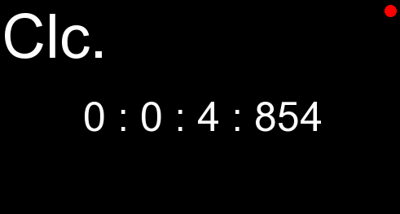

clc. is super simple time counter using RGFW windowing framework and Glyph for rendering text with OpenGL.
currently clc project use bash script to get dependency for build in debian-base linux, and then use Cmake for
building.
clc. feature :
├── restore last time data after restart
├── easy to contribute and getting in touch we project
└── fast , minimal
it's very joyable for me that if you have issues , suggestion ⧓ or report while using clc to reach this
address's :
clc mailing list in source hut
clc todo list also in source hut
clc github repository in github
